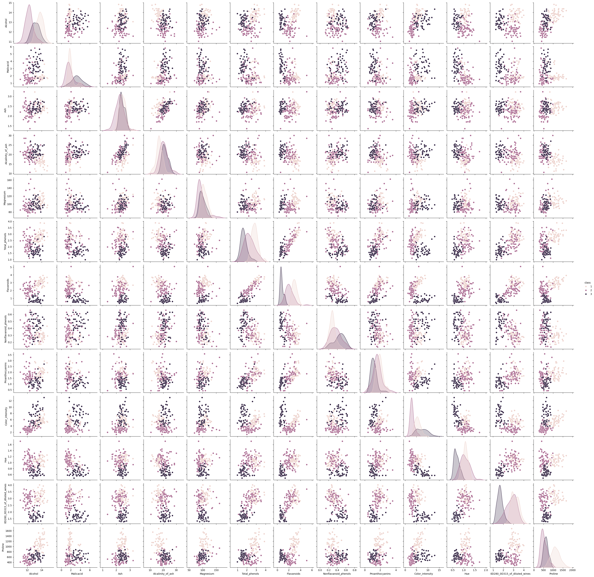
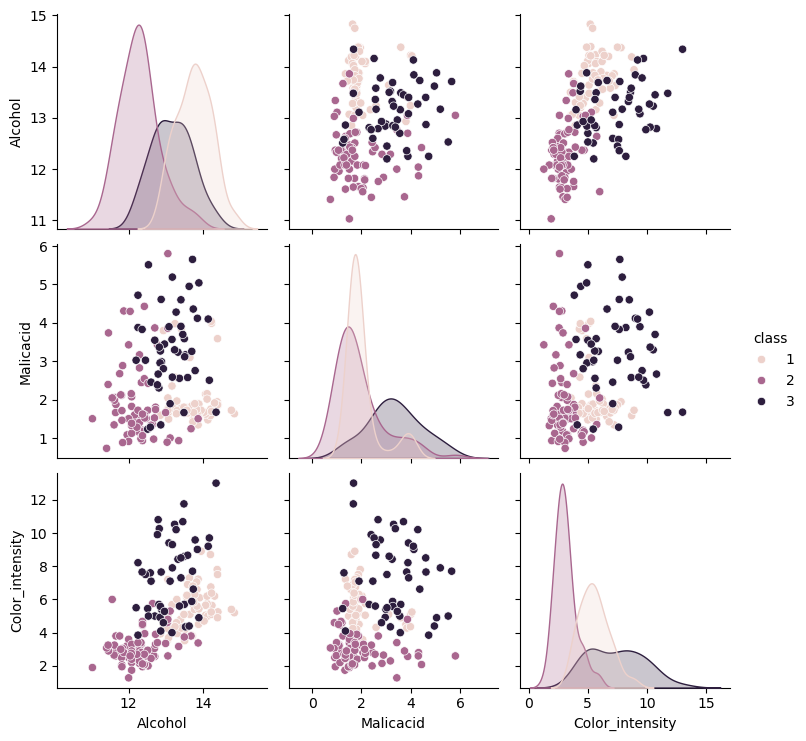

Wine Classification#
In this project we needed to find a data set that was completely numerical. Through the use of a classification model we were supposed to determine if this could be applied in the real world or if something more complex was required.
import pandas as pd
import seaborn as sns
from sklearn import tree
import numpy as np
from sklearn.model_selection import train_test_split
from sklearn.naive_bayes import GaussianNB
from sklearn.metrics import confusion_matrix
from sklearn.metrics import classification_report
import matplotlib.pyplot as plt
from sklearn.metrics import confusion_matrix, classification_report, roc_auc_score
Dataset and EDA#
This Dataset is contains chemical analysis of wines grown in the same region in Italy but derived from three different cultivars (represented simply as 1-3), these features include color intensity but also alcohol contents and ash which are not visualy determinable. The task at hand is to determine if wine is from one of the three class’s based off of their chemical compounds and looks.
column_names = ["class", "Alcohol", "Malicacid", "Ash", "Alcalinity_of_ash", "Magnesium", "Total_phenols",
"Flavanoids", "Nonflavanoid_phenols", "Proanthocyanins", "Color_intensity", "Hue", "0D280_0D315_of_diluted_wines", "Proline"]
wine_df = pd.read_csv('wine.data', names=column_names)
wine_df.head()
| class | Alcohol | Malicacid | Ash | Alcalinity_of_ash | Magnesium | Total_phenols | Flavanoids | Nonflavanoid_phenols | Proanthocyanins | Color_intensity | Hue | 0D280_0D315_of_diluted_wines | Proline | |
|---|---|---|---|---|---|---|---|---|---|---|---|---|---|---|
| 0 | 1 | 14.23 | 1.71 | 2.43 | 15.6 | 127 | 2.80 | 3.06 | 0.28 | 2.29 | 5.64 | 1.04 | 3.92 | 1065 |
| 1 | 1 | 13.20 | 1.78 | 2.14 | 11.2 | 100 | 2.65 | 2.76 | 0.26 | 1.28 | 4.38 | 1.05 | 3.40 | 1050 |
| 2 | 1 | 13.16 | 2.36 | 2.67 | 18.6 | 101 | 2.80 | 3.24 | 0.30 | 2.81 | 5.68 | 1.03 | 3.17 | 1185 |
| 3 | 1 | 14.37 | 1.95 | 2.50 | 16.8 | 113 | 3.85 | 3.49 | 0.24 | 2.18 | 7.80 | 0.86 | 3.45 | 1480 |
| 4 | 1 | 13.24 | 2.59 | 2.87 | 21.0 | 118 | 2.80 | 2.69 | 0.39 | 1.82 | 4.32 | 1.04 | 2.93 | 735 |
wine_df.shape
(178, 14)
wine_df.value_counts('class')
class
2 71
1 59
3 48
Name: count, dtype: int64
feature_vars = ["Alcohol", "Malicacid", "Ash", "Alcalinity_of_ash", "Magnesium", "Total_phenols",
"Flavanoids", "Nonflavanoid_phenols", "Proanthocyanins", "Color_intensity", "Hue", "0D280_0D315_of_diluted_wines", "Proline"]
target_var = 'class'
Expectations#
Looking at the pairplot, using all the columns Id expect Gausssian Naive Bayes to score very high as Alcohol, Malicacid, Flavanoids, and Color_intensity are fairly distinct.
sns.pairplot(data=wine_df,hue=target_var)
<seaborn.axisgrid.PairGrid at 0x21637c388f0>

Narrowing options for clarity#
This seemed a bit cramped so I made a simpler version for comparisons using some of the more distinct cols
wine_simple_cols = ["class", "Alcohol", "Malicacid", "Color_intensity"]
wine_simple_df = pd.read_csv('wine.data',usecols=[0,1,2,10],names=wine_simple_cols)
wine_simple_df
| class | Alcohol | Malicacid | Color_intensity | |
|---|---|---|---|---|
| 0 | 1 | 14.23 | 1.71 | 5.64 |
| 1 | 1 | 13.20 | 1.78 | 4.38 |
| 2 | 1 | 13.16 | 2.36 | 5.68 |
| 3 | 1 | 14.37 | 1.95 | 7.80 |
| 4 | 1 | 13.24 | 2.59 | 4.32 |
| ... | ... | ... | ... | ... |
| 173 | 3 | 13.71 | 5.65 | 7.70 |
| 174 | 3 | 13.40 | 3.91 | 7.30 |
| 175 | 3 | 13.27 | 4.28 | 10.20 |
| 176 | 3 | 13.17 | 2.59 | 9.30 |
| 177 | 3 | 14.13 | 4.10 | 9.20 |
178 rows × 4 columns
feature_vars_simple = ["Alcohol", "Malicacid", "Color_intensity" ]
target_var = 'class'
sns.pairplot(data=wine_simple_df,hue=target_var)
<seaborn.axisgrid.PairGrid at 0x2163c09af60>

Inspecting Elements and Basic Classification#
A closer inspection makes me think class 3 will confuse the model, class 1 and 2 cluster together with some outliers but 3 is all over the place. Ill split the test size by 20% for more testing
X_train, X_test, y_train, y_test = train_test_split(wine_simple_df[feature_vars_simple],
wine_simple_df[target_var],
random_state=5, test_size=0.2)
X_train.shape, X_test.shape
((142, 3), (36, 3))
gnb = GaussianNB()
gnb.fit(X_train,y_train)
GaussianNB()In a Jupyter environment, please rerun this cell to show the HTML representation or trust the notebook.
On GitHub, the HTML representation is unable to render, please try loading this page with nbviewer.org.
GaussianNB()
General Analysis#
I would say this model makes sense as visual features like color intensity, malic acid content, and alcohol content do correlate to the diffrent class’s. The parameters again do fit well as the pairplot above is easy to read, while I still think class 3 will be difficult to parse these features are integrel to wine.
gnb.score(X_train, y_train)
0.9014084507042254
gnb.score(X_test,y_test)
0.75
confusion_matrix(y_test,y_pred)
y_pred = gnb.predict(X_test)
n_classes = len(gnb.classes_)
prediction_labels = [['predicted class']*n_classes, gnb.classes_]
actual_labels = [['true class']*n_classes, gnb.classes_]
conf_mat = confusion_matrix(y_test,y_pred)
conf_df = pd.DataFrame(data = conf_mat, index=actual_labels, columns=prediction_labels)
conf_df
| predicted class | ||||
|---|---|---|---|---|
| 1 | 2 | 3 | ||
| true class | 1 | 12 | 2 | 3 |
| 2 | 2 | 9 | 0 | |
| 3 | 1 | 1 | 6 | |
print(classification_report(y_test,y_pred))
precision recall f1-score support
1 0.80 0.71 0.75 17
2 0.75 0.82 0.78 11
3 0.67 0.75 0.71 8
accuracy 0.75 36
macro avg 0.74 0.76 0.75 36
weighted avg 0.76 0.75 0.75 36
Classification Report and Confusion Matrix Analysis#
Based on the classification report class 3’s precision rate is pretty low. This tells me that as the data were to scale up class’3 precision is more likely to drop more and become less reliabe, this would also have an effect on class 1 and 2. I dont think I would deploy this model baised on these statistics since I couldnt trust its ablility to make a distinction. I would say machine learning could not be used since these statistics, even with the wines more distinct cols the model cant reliably pick out the correct wine.
dictList = []
i = .1
while i <= .9:
X_train, X_test, y_train, y_test = train_test_split(wine_simple_df[feature_vars_simple],
wine_simple_df[target_var],
random_state=5, test_size=i)
gnb = GaussianNB()
gnb.fit(X_train,y_train)
train_acc = gnb.score(X_train, y_train)
test_acc = gnb.score(X_test, y_test)
dictList.append({
'train_pct': i,
'n_train_samples': len(X_train),
'n_test_samples': len(X_test),
'train_acc': train_acc,
'test_acc': test_acc
})
i = i + .1
percent_df = pd.DataFrame(dictList)
percent_df
| train_pct | n_train_samples | n_test_samples | train_acc | test_acc | |
|---|---|---|---|---|---|
| 0 | 0.1 | 160 | 18 | 0.881250 | 0.722222 |
| 1 | 0.2 | 142 | 36 | 0.901408 | 0.750000 |
| 2 | 0.3 | 124 | 54 | 0.911290 | 0.796296 |
| 3 | 0.4 | 106 | 72 | 0.915094 | 0.805556 |
| 4 | 0.5 | 89 | 89 | 0.898876 | 0.831461 |
| 5 | 0.6 | 71 | 107 | 0.901408 | 0.831776 |
| 6 | 0.7 | 53 | 125 | 0.924528 | 0.824000 |
| 7 | 0.8 | 35 | 143 | 0.942857 | 0.790210 |
| 8 | 0.9 | 17 | 161 | 1.000000 | 0.782609 |
Overfitting issues#
I can see here that the training accuracy is usuually much higher than test accuracy, this makes me question if the model is getting better with figuring out patterns or is simply just recognizing data its been given. At 90% it gets a 100% score but in test accuracy isnt even the highest score of that catagory. The test accuracy does go up when we give it more data but seems to drop off at 30%. From 30% we see it boosts to a high of 83% but also drops back to 78% which makes me question if giving it more data actually does help it.